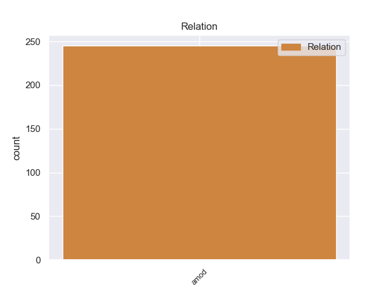
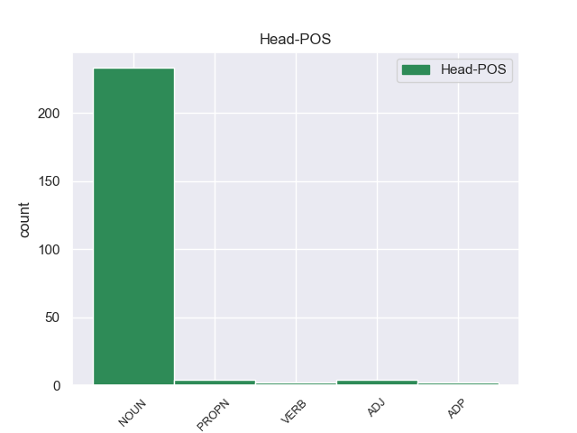
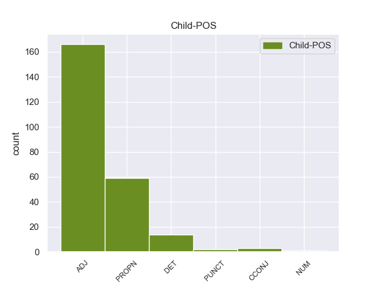

Distribution of features within this leaf



Agreement Rules sorted by frequency.
- When the dependent token is the adjectival modifier(amod) of the head token, and the dependent token is ADJ.
1 Si _ _ _ _ 0 _ _ _
2 Lord _ _ _ _ 0 _ _ _
3 Robert _ _ _ _ 0 _ _ _
4 sufriera _ _ _ _ 0 _ _ _
5 una _ _ _ _ 0 _ _ _
6 muerte _ _ _ _ 0 _ _ _
7 prematura prematura ADJ _ Gender=Masc|Number=Sing 11 amod _ _
8 , _ _ _ _ 0 _ _ _
9 Harrold _ _ _ _ 0 _ _ _
10 se _ _ _ _ 0 _ _ _
11 convertiria convertiria NOUN _ Gender=Masc|Number=Sing 0 _ _ _
12 en _ _ _ _ 0 _ _ _
13 Señor _ _ _ _ 0 _ _ _
14 de _ _ _ _ 0 _ _ _
15 el _ _ _ _ 0 _ _ _
16 Nido _ _ _ _ 0 _ _ _
17 de _ _ _ _ 0 _ _ _
18 Aguilas _ _ _ _ 0 _ _ _
19 y _ _ _ _ 0 _ _ _
20 el _ _ _ _ 0 _ _ _
21 Valle _ _ _ _ 0 _ _ _
22 de _ _ _ _ 0 _ _ _
23 Arryn _ _ _ _ 0 _ _ _
24 . _ _ _ _ 0 _ _ _
1 El _ _ _ _ 0 _ _ _
2 municipio _ _ _ _ 0 _ _ _
3 de _ _ _ _ 0 _ _ _
4 Republic republic NOUN _ Gender=Masc|Number=Sing 0 _ _ _
5 ( _ _ _ _ 0 _ _ _
6 en _ _ _ _ 0 _ _ _
7 inglés _ _ _ _ 0 _ _ _
8 : _ _ _ _ 0 _ _ _
9 Republic republic PROPN _ Gender=Masc|Number=Sing 4 amod _ _
10 Township _ _ _ _ 0 _ _ _
11 ) _ _ _ _ 0 _ _ _
12 es _ _ _ _ 0 _ _ _
13 un _ _ _ _ 0 _ _ _
14 municipio _ _ _ _ 0 _ _ _
15 ubicado _ _ _ _ 0 _ _ _
16 en _ _ _ _ 0 _ _ _
17 el _ _ _ _ 0 _ _ _
18 condado _ _ _ _ 0 _ _ _
19 de _ _ _ _ 0 _ _ _
20 Marquette _ _ _ _ 0 _ _ _
21 en _ _ _ _ 0 _ _ _
22 el _ _ _ _ 0 _ _ _
23 estado _ _ _ _ 0 _ _ _
24 estadounidense _ _ _ _ 0 _ _ _
25 de _ _ _ _ 0 _ _ _
26 Míchigan _ _ _ _ 0 _ _ _
27 . _ _ _ _ 0 _ _ _
1 Sirva _ _ _ _ 0 _ _ _
2 la _ _ _ _ 0 _ _ _
3 presente _ _ _ _ 0 _ _ _
4 para _ _ _ _ 0 _ _ _
5 saludar _ _ _ _ 0 _ _ _
6 le _ _ _ _ 0 _ _ _
7 de _ _ _ _ 0 _ _ _
8 parte _ _ _ _ 0 _ _ _
9 de _ _ _ _ 0 _ _ _
10 el _ _ _ _ 0 _ _ _
11 Alcalde _ _ _ _ 0 _ _ _
12 de _ _ _ _ 0 _ _ _
13 el _ _ _ _ 0 _ _ _
14 Municipio _ _ _ _ 0 _ _ _
15 Heres _ _ _ _ 0 _ _ _
16 y _ _ _ _ 0 _ _ _
17 su _ _ _ _ 0 _ _ _
18 Equipo _ _ _ _ 0 _ _ _
19 de _ _ _ _ 0 _ _ _
20 Turismo _ _ _ _ 0 _ _ _
21 e _ _ _ _ 0 _ _ _
22 informar _ _ _ _ 0 _ _ _
23 le _ _ _ _ 0 _ _ _
24 que _ _ _ _ 0 _ _ _
25 el _ _ _ _ 0 _ _ _
26 20 _ _ _ _ 0 _ _ _
27 de _ _ _ _ 0 _ _ _
28 mayo _ _ _ _ 0 _ _ _
29 de _ _ _ _ 0 _ _ _
30 el _ _ _ _ 0 _ _ _
31 año _ _ _ _ 0 _ _ _
32 en _ _ _ _ 0 _ _ _
33 curso _ _ _ _ 0 _ _ _
34 , _ _ _ _ 0 _ _ _
35 en _ _ _ _ 0 _ _ _
36 el _ _ _ _ 0 _ _ _
37 marco _ _ _ _ 0 _ _ _
38 de _ _ _ _ 0 _ _ _
39 la _ _ _ _ 0 _ _ _
40 celebración _ _ _ _ 0 _ _ _
41 de _ _ _ _ 0 _ _ _
42 los _ _ _ _ 0 _ _ _
43 246 _ _ _ _ 0 _ _ _
44 aniversarios _ _ _ _ 0 _ _ _
45 de _ _ _ _ 0 _ _ _
46 Ciudad _ _ _ _ 0 _ _ _
47 Bolívar _ _ _ _ 0 _ _ _
48 , _ _ _ _ 0 _ _ _
49 la _ _ _ _ 0 _ _ _
50 Alcaldía _ _ _ _ 0 _ _ _
51 de _ _ _ _ 0 _ _ _
52 el _ _ _ _ 0 _ _ _
53 Municipio _ _ _ _ 0 _ _ _
54 Heres _ _ _ _ 0 _ _ _
55 , _ _ _ _ 0 _ _ _
56 a _ _ _ _ 0 _ _ _
57 través _ _ _ _ 0 _ _ _
58 de _ _ _ _ 0 _ _ _
59 su _ _ _ _ 0 _ _ _
60 Dirección _ _ _ _ 0 _ _ _
61 de _ _ _ _ 0 _ _ _
62 Turismo _ _ _ _ 0 _ _ _
63 ha _ _ _ _ 0 _ _ _
64 programado _ _ _ _ 0 _ _ _
65 las _ _ _ _ 0 _ _ _
66 1ras _ _ _ _ 0 _ _ _
67 jornadas _ _ _ _ 0 _ _ _
68 sobre _ _ _ _ 0 _ _ _
69 perspectivas _ _ _ _ 0 _ _ _
70 de _ _ _ _ 0 _ _ _
71 desarrollo _ _ _ _ 0 _ _ _
72 para _ _ _ _ 0 _ _ _
73 el _ _ _ _ 0 _ _ _
74 turístico _ _ _ _ 0 _ _ _
75 sustentable _ _ _ _ 0 _ _ _
76 en _ _ _ _ 0 _ _ _
77 el _ _ _ _ 0 _ _ _
78 Municipio _ _ _ _ 0 _ _ _
79 Heres _ _ _ _ 0 _ _ _
80 , _ _ _ _ 0 _ _ _
81 que _ _ _ _ 0 _ _ _
82 contará _ _ _ _ 0 _ _ _
83 con _ _ _ _ 0 _ _ _
84 la _ _ _ _ 0 _ _ _
85 participación participación NOUN _ Gender=Fem|Number=Sing 0 _ _ _
86 de _ _ _ _ 0 _ _ _
87 representantes _ _ _ _ 0 _ _ _
88 de _ _ _ _ 0 _ _ _
89 los _ _ _ _ 0 _ _ _
90 poderes _ _ _ _ 0 _ _ _
91 públicos _ _ _ _ 0 _ _ _
92 locales _ _ _ _ 0 _ _ _
93 , _ _ _ _ 0 _ _ _
94 regionales _ _ _ _ 0 _ _ _
95 y _ _ _ _ 0 _ _ _
96 nacionales _ _ _ _ 0 _ _ _
97 , _ _ _ _ 0 _ _ _
98 así _ _ _ _ 0 _ _ _
99 como _ _ _ _ 0 _ _ _
100 destacados destacados DET _ Gender=Fem|Number=Sing 85 amod _ _
101 profesionales _ _ _ _ 0 _ _ _
102 , _ _ _ _ 0 _ _ _
103 académicos _ _ _ _ 0 _ _ _
104 , _ _ _ _ 0 _ _ _
105 coordinadores _ _ _ _ 0 _ _ _
106 de _ _ _ _ 0 _ _ _
107 turismos _ _ _ _ 0 _ _ _
108 de _ _ _ _ 0 _ _ _
109 las _ _ _ _ 0 _ _ _
110 diferentes _ _ _ _ 0 _ _ _
111 universidades _ _ _ _ 0 _ _ _
112 que _ _ _ _ 0 _ _ _
113 ofrecen _ _ _ _ 0 _ _ _
114 la _ _ _ _ 0 _ _ _
115 carrera _ _ _ _ 0 _ _ _
116 de _ _ _ _ 0 _ _ _
117 Turismo _ _ _ _ 0 _ _ _
118 en _ _ _ _ 0 _ _ _
119 la _ _ _ _ 0 _ _ _
120 región _ _ _ _ 0 _ _ _
121 , _ _ _ _ 0 _ _ _
122 estudiantes _ _ _ _ 0 _ _ _
123 universitarios _ _ _ _ 0 _ _ _
124 , _ _ _ _ 0 _ _ _
125 empresarios _ _ _ _ 0 _ _ _
126 turísticos _ _ _ _ 0 _ _ _
127 y _ _ _ _ 0 _ _ _
128 promotores _ _ _ _ 0 _ _ _
129 turísticos _ _ _ _ 0 _ _ _
130 de _ _ _ _ 0 _ _ _
131 el _ _ _ _ 0 _ _ _
132 Estado _ _ _ _ 0 _ _ _
133 Bolívar _ _ _ _ 0 _ _ _
134 . _ _ _ _ 0 _ _ _
1 La _ _ _ _ 0 _ _ _
2 cinta cinta NOUN _ Gender=Masc|Number=Sing 0 _ _ _
3 métrica métrica CCONJ _ Gender=Masc|Number=Sing 2 amod _ _
4 marca _ _ _ _ 0 _ _ _
5 unas _ _ _ _ 0 _ _ _
6 medidas _ _ _ _ 0 _ _ _
7 para _ _ _ _ 0 _ _ _
8 este _ _ _ _ 0 _ _ _
9 terminal _ _ _ _ 0 _ _ _
10 de _ _ _ _ 0 _ _ _
11 111 _ _ _ _ 0 _ _ _
12 × _ _ _ _ 0 _ _ _
13 53 _ _ _ _ 0 _ _ _
14 × _ _ _ _ 0 _ _ _
15 9,4 _ _ _ _ 0 _ _ _
16 mm _ _ _ _ 0 _ _ _
17 mientras _ _ _ _ 0 _ _ _
18 que _ _ _ _ 0 _ _ _
19 su _ _ _ _ 0 _ _ _
20 peso _ _ _ _ 0 _ _ _
21 se _ _ _ _ 0 _ _ _
22 sitúa _ _ _ _ 0 _ _ _
23 en _ _ _ _ 0 _ _ _
24 los _ _ _ _ 0 _ _ _
25 100 _ _ _ _ 0 _ _ _
26 gramos _ _ _ _ 0 _ _ _
27 justos _ _ _ _ 0 _ _ _
28 . _ _ _ _ 0 _ _ _
1 Los _ _ _ _ 0 _ _ _
2 esparragos _ _ _ _ 0 _ _ _
3 , _ _ _ _ 0 _ _ _
4 la _ _ _ _ 0 _ _ _
5 remolacha _ _ _ _ 0 _ _ _
6 , _ _ _ _ 0 _ _ _
7 los _ _ _ _ 0 _ _ _
8 tomatitos tomatitos NOUN _ Gender=Masc|Number=Sing 0 _ _ _
9 y _ _ _ _ 0 _ _ _
10 los _ _ _ _ 0 _ _ _
11 huevos _ _ _ _ 0 _ _ _
12 cocidos _ _ _ _ 0 _ _ _
13 no _ _ _ _ 0 _ _ _
14 estaban _ _ _ _ 0 _ _ _
15 en _ _ _ _ 0 _ _ _
16 mi _ _ _ _ 0 _ _ _
17 ensalada _ _ _ _ 0 _ _ _
18 , _ _ _ _ 0 _ _ _
19 sin _ _ _ _ 0 _ _ _
20 embargo _ _ _ _ 0 _ _ _
21 a _ _ _ _ 0 _ _ _
22 la _ _ _ _ 0 _ _ _
23 otra _ _ _ _ 0 _ _ _
24 ensalada _ _ _ _ 0 _ _ _
25 solo _ _ _ _ 0 _ _ _
26 le _ _ _ _ 0 _ _ _
27 faltaban _ _ _ _ 0 _ _ _
28 los _ _ _ _ 0 _ _ _
29 esparragos _ _ _ _ 0 _ _ _
30 y _ _ _ _ 0 _ _ _
31 la _ _ _ _ 0 _ _ _
32 remolacha _ _ _ _ 0 _ _ _
33 , _ _ _ _ 0 _ _ _
34 dos _ _ _ _ 0 _ _ _
35 bonos _ _ _ _ 0 _ _ _
36 totalmente _ _ _ _ 0 _ _ _
37 iguales iguales PUNCT _ Gender=Masc|Number=Sing 8 amod _ _
38 y _ _ _ _ 0 _ _ _
39 ensaladas _ _ _ _ 0 _ _ _
40 distintas _ _ _ _ 0 _ _ _
41 de _ _ _ _ 0 _ _ _
42 el _ _ _ _ 0 _ _ _
43 bono _ _ _ _ 0 _ _ _
44 y _ _ _ _ 0 _ _ _
45 la _ _ _ _ 0 _ _ _
46 una _ _ _ _ 0 _ _ _
47 de _ _ _ _ 0 _ _ _
48 la _ _ _ _ 0 _ _ _
49 otra _ _ _ _ 0 _ _ _
50 . _ _ _ _ 0 _ _ _
Disagree Examples:
1 Especialistas _ _ _ _ 0 _ _ _
2 en _ _ _ _ 0 _ _ _
3 seguridad _ _ _ _ 0 _ _ _
4 advirtieron _ _ _ _ 0 _ _ _
5 que _ _ _ _ 0 _ _ _
6 no _ _ _ _ 0 _ _ _
7 son _ _ _ _ 0 _ _ _
8 pasajeros _ _ _ _ 0 _ _ _
9 comunes _ _ _ _ 0 _ _ _
10 ni _ _ _ _ 0 _ _ _
11 equipaje _ _ _ _ 0 _ _ _
12 corriente _ _ _ _ 0 _ _ _
13 lo _ _ _ _ 0 _ _ _
14 que _ _ _ _ 0 _ _ _
15 viaja _ _ _ _ 0 _ _ _
16 a _ _ _ _ 0 _ _ _
17 través _ _ _ _ 0 _ _ _
18 de _ _ _ _ 0 _ _ _
19 la _ _ _ _ 0 _ _ _
20 conexión conexión NOUN _ Gender=Fem|Number=Sing 0 _ _ _
21 aérea _ _ _ _ 0 _ _ _
22 bimestral bimestral ADJ _ Gender=Masc|Number=Sing 20 amod _ _
23 asegurada _ _ _ _ 0 _ _ _
24 por _ _ _ _ 0 _ _ _
25 Irán _ _ _ _ 0 _ _ _
26 Air _ _ _ _ 0 _ _ _
27 entre _ _ _ _ 0 _ _ _
28 Irán _ _ _ _ 0 _ _ _
29 y _ _ _ _ 0 _ _ _
30 Venezuela _ _ _ _ 0 _ _ _
31 . _ _ _ _ 0 _ _ _
1 La _ _ _ _ 0 _ _ _
2 justicia _ _ _ _ 0 _ _ _
3 social _ _ _ _ 0 _ _ _
4 , _ _ _ _ 0 _ _ _
5 defendida _ _ _ _ 0 _ _ _
6 por _ _ _ _ 0 _ _ _
7 la _ _ _ _ 0 _ _ _
8 corporación corporación NOUN _ Gender=Masc|Number=Sing 0 _ _ _
9 gremial gremial ADJ _ Gender=Fem|Number=Sing 8 amod _ _
10 , _ _ _ _ 0 _ _ _
11 convirtió _ _ _ _ 0 _ _ _
12 a _ _ _ _ 0 _ _ _
13 los _ _ _ _ 0 _ _ _
14 " _ _ _ _ 0 _ _ _
15 maestros _ _ _ _ 0 _ _ _
16 " _ _ _ _ 0 _ _ _
17 en _ _ _ _ 0 _ _ _
18 " _ _ _ _ 0 _ _ _
19 trabajadores _ _ _ _ 0 _ _ _
20 " _ _ _ _ 0 _ _ _
21 de _ _ _ _ 0 _ _ _
22 la _ _ _ _ 0 _ _ _
23 educación _ _ _ _ 0 _ _ _
24 . _ _ _ _ 0 _ _ _
1 En _ _ _ _ 0 _ _ _
2 esta _ _ _ _ 0 _ _ _
3 ocasión _ _ _ _ 0 _ _ _
4 , _ _ _ _ 0 _ _ _
5 que _ _ _ _ 0 _ _ _
6 era _ _ _ _ 0 _ _ _
7 la _ _ _ _ 0 _ _ _
8 despedida _ _ _ _ 0 _ _ _
9 de _ _ _ _ 0 _ _ _
10 la _ _ _ _ 0 _ _ _
11 banda banda NOUN _ Gender=Fem|Number=Sing 0 _ _ _
12 neoyorquina neoyorquina ADJ _ Gender=Masc|Number=Sing 11 amod _ _
13 , _ _ _ _ 0 _ _ _
14 Campino _ _ _ _ 0 _ _ _
15 trepó _ _ _ _ 0 _ _ _
16 por _ _ _ _ 0 _ _ _
17 el _ _ _ _ 0 _ _ _
18 techo _ _ _ _ 0 _ _ _
19 de _ _ _ _ 0 _ _ _
20 el _ _ _ _ 0 _ _ _
21 escenario _ _ _ _ 0 _ _ _
22 , _ _ _ _ 0 _ _ _
23 hasta _ _ _ _ 0 _ _ _
24 colgar _ _ _ _ 0 _ _ _
25 se _ _ _ _ 0 _ _ _
26 de _ _ _ _ 0 _ _ _
27 boca _ _ _ _ 0 _ _ _
28 abajo _ _ _ _ 0 _ _ _
29 con _ _ _ _ 0 _ _ _
30 sus _ _ _ _ 0 _ _ _
31 piernas _ _ _ _ 0 _ _ _
32 y _ _ _ _ 0 _ _ _
33 continuar _ _ _ _ 0 _ _ _
34 cantando _ _ _ _ 0 _ _ _
35 una _ _ _ _ 0 _ _ _
36 tema _ _ _ _ 0 _ _ _
37 ante _ _ _ _ 0 _ _ _
38 50000 _ _ _ _ 0 _ _ _
39 sorprendidos _ _ _ _ 0 _ _ _
40 espectadores _ _ _ _ 0 _ _ _
41 . _ _ _ _ 0 _ _ _
1 En _ _ _ _ 0 _ _ _
2 la _ _ _ _ 0 _ _ _
3 primera _ _ _ _ 0 _ _ _
4 parte _ _ _ _ 0 _ _ _
5 de _ _ _ _ 0 _ _ _
6 ese _ _ _ _ 0 _ _ _
7 periodo _ _ _ _ 0 _ _ _
8 las _ _ _ _ 0 _ _ _
9 políticas _ _ _ _ 0 _ _ _
10 económicas _ _ _ _ 0 _ _ _
11 ( _ _ _ _ 0 _ _ _
12 ver _ _ _ _ 0 _ _ _
13 Economía _ _ _ _ 0 _ _ _
14 política _ _ _ _ 0 _ _ _
15 ) _ _ _ _ 0 _ _ _
16 de _ _ _ _ 0 _ _ _
17 ese _ _ _ _ 0 _ _ _
18 país _ _ _ _ 0 _ _ _
19 estaba _ _ _ _ 0 _ _ _
20 fuertemente _ _ _ _ 0 _ _ _
21 influida _ _ _ _ 0 _ _ _
22 por _ _ _ _ 0 _ _ _
23 la _ _ _ _ 0 _ _ _
24 llamada _ _ _ _ 0 _ _ _
25 síntesis _ _ _ _ 0 _ _ _
26 clásico _ _ _ _ 0 _ _ _
27 - _ _ _ _ 0 _ _ _
28 keynesiana _ _ _ _ 0 _ _ _
29 o _ _ _ _ 0 _ _ _
30 Síntesis _ _ _ _ 0 _ _ _
31 neoclásica neoclásica ADJ _ Gender=Masc|Number=Sing 45 amod _ _
32 y _ _ _ _ 0 _ _ _
33 , _ _ _ _ 0 _ _ _
34 posteriormente _ _ _ _ 0 _ _ _
35 , _ _ _ _ 0 _ _ _
36 por _ _ _ _ 0 _ _ _
37 las _ _ _ _ 0 _ _ _
38 aproximaciones _ _ _ _ 0 _ _ _
39 de _ _ _ _ 0 _ _ _
40 el _ _ _ _ 0 _ _ _
41 Monetarismo _ _ _ _ 0 _ _ _
42 y _ _ _ _ 0 _ _ _
43 la _ _ _ _ 0 _ _ _
44 llamada _ _ _ _ 0 _ _ _
45 Escuela escuela NOUN _ Gender=Fem|Number=Sing 0 _ _ _
46 de _ _ _ _ 0 _ _ _
47 Economía _ _ _ _ 0 _ _ _
48 de _ _ _ _ 0 _ _ _
49 Chicago _ _ _ _ 0 _ _ _
50 . _ _ _ _ 0 _ _ _
1 El _ _ _ _ 0 _ _ _
2 conseller _ _ _ _ 0 _ _ _
3 ha _ _ _ _ 0 _ _ _
4 indicado _ _ _ _ 0 _ _ _
5 que _ _ _ _ 0 _ _ _
6 la _ _ _ _ 0 _ _ _
7 " _ _ _ _ 0 _ _ _
8 etapa etapa NOUN _ Gender=Fem|Number=Sing 0 _ _ _
9 negra negra ADJ _ Gender=Masc|Number=Sing 8 amod _ _
10 " _ _ _ _ 0 _ _ _
11 en _ _ _ _ 0 _ _ _
12 la _ _ _ _ 0 _ _ _
13 contratación _ _ _ _ 0 _ _ _
14 administrativa _ _ _ _ 0 _ _ _
15 se _ _ _ _ 0 _ _ _
16 podría _ _ _ _ 0 _ _ _
17 decir _ _ _ _ 0 _ _ _
18 que _ _ _ _ 0 _ _ _
19 corresponde _ _ _ _ 0 _ _ _
20 a _ _ _ _ 0 _ _ _
21 la _ _ _ _ 0 _ _ _
22 anterior _ _ _ _ 0 _ _ _
23 etapa _ _ _ _ 0 _ _ _
24 de _ _ _ _ 0 _ _ _
25 el _ _ _ _ 0 _ _ _
26 gobierno _ _ _ _ 0 _ _ _
27 socialista _ _ _ _ 0 _ _ _
28 en _ _ _ _ 0 _ _ _
29 la _ _ _ _ 0 _ _ _
30 Comunitat _ _ _ _ 0 _ _ _
31 , _ _ _ _ 0 _ _ _
32 ya _ _ _ _ 0 _ _ _
33 que _ _ _ _ 0 _ _ _
34 el _ _ _ _ 0 _ _ _
35 uso _ _ _ _ 0 _ _ _
36 de _ _ _ _ 0 _ _ _
37 procedimientos _ _ _ _ 0 _ _ _
38 negociados _ _ _ _ 0 _ _ _
39 sin _ _ _ _ 0 _ _ _
40 publicidad _ _ _ _ 0 _ _ _
41 era _ _ _ _ 0 _ _ _
42 el _ _ _ _ 0 _ _ _
43 doble _ _ _ _ 0 _ _ _
44 que _ _ _ _ 0 _ _ _
45 en _ _ _ _ 0 _ _ _
46 la _ _ _ _ 0 _ _ _
47 actualidad _ _ _ _ 0 _ _ _
48 , _ _ _ _ 0 _ _ _
49 ha _ _ _ _ 0 _ _ _
50 señalado _ _ _ _ 0 _ _ _
51 . _ _ _ _ 0 _ _ _